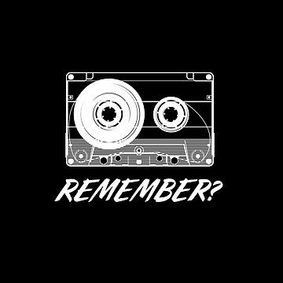

Reproducir → Invisible Invisible Plastic Homenaje a la mítica discoteca Plastic de Madrid. Una selección de clásicos que marcaron una época
 Reproducir → Invisible Invisible Tributo MA Sube el volumen, cierra los ojos y transportémonos a aquella cabina del 97 donde todo era ritmo.